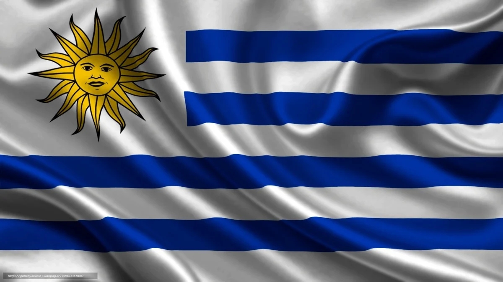

Antes da chegada dos conquistadores espanhóis, a região onde hoje situa-se o Uruguai foi habitada por índios charruas, guaranis e chanaés até o século XVII. Uma colônia espanhola foi criada em Soriano em 1624. Em 1680, os portugueses estabeleceram a colônia de Sacramento, porém os espanhóis expulsaram-nos desse território. Montevidéu foi dominada entre os anos de 1810 e 1814, após uma luta armada liderada pelo militar uruguaio José Gervazio Artigas. Em 1816, tropas portuguesas apoiadas pela Argentina invadiram o país e derrotaram Artigas. Logo em seguida, o Uruguai foi ocupado por novas forças, só que dessa vez pela aliança dos portugueses com o Brasil. Esse território foi anexado às terras brasileiras em 1821, com o nome de província Cisplatina. O Uruguai tornou-se independente em 1825, e quem a proclamou foi o líder político uruguaio Juan Antonio Lavalleja.
O futebol é o desporto mais popular no Uruguai. O país tem tradições em outros desportos, como o basquetebol, ciclismo, boxe e rúgbi.
A culinária uruguaia é uma fusão de influências europeias e indígenas, ou seja, criando uma mistura única que satisfaz até mesmo os paladares mais exigentes. Os pratos uruguaios são conhecidos por sua simplicidade e alta qualidade dos ingredientes. O destaque da cozinha uruguaia é, sem dúvida, a carne. A carne bovina é uma paixão nacional, e o Uruguai é famoso por produzir algumas das melhores carnes do mundo.
Assim como na maioria dos países da América do Sul no Uruguai o idioma mais falado é o espanhol.
Situado na zona temperada do planeta, o território uruguaio experimenta, em sua maior parte, um clima do tipo subtropical. As estações do ano são bem definidas, e as chuvas ocorrem regularmente, não havendo, assim, uma estação seca.
O Uruguai é considerado o país menos religioso da América Latina, com mais de metade da população a não se identificar com nenhuma religião ou a não acreditar em Deus. Em 2008, uma pesquisa do Instituto Nacional de Estatística do Uruguai indicava que o catolicismo era a religião principal, com 45,7% da população.